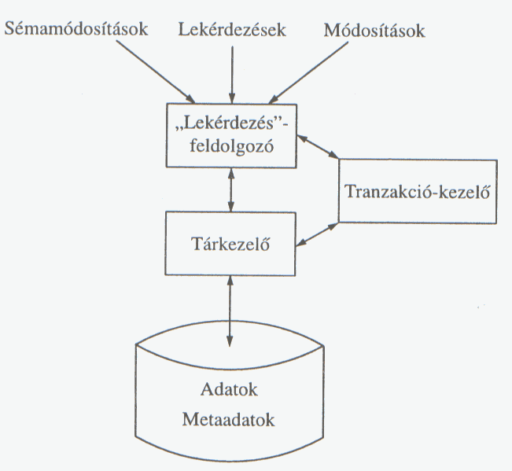

Adatbázisrendszerek témakör
Az adatbázisrendszerek az adatok strukturált tárolásának és kezelésének alapjait foglalják magukba. Különösen fontos a SQL nyelv megértése.
Az ábrán az adatbázis-kezelő rendszerek legfontosabb részeit láthatjuk.

Vissza a kezdőlapra